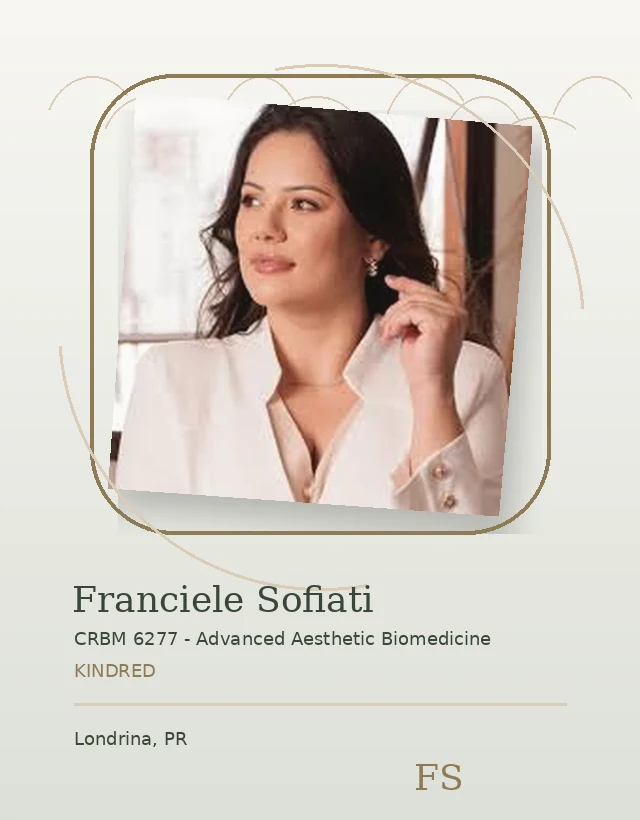

Kindred / Page Hero
Accessibility
Clear information helps visitors use this site with confidence.


Kindred / Main Explanation
Plain language
This page explains the main information simply and clearly.
Kindred / Key Topic
Key details
Important details should be easy to read and understand.
Kindred / User Choice
Your choices
Visitors should understand their options and contact routes.
Kindred / Trust Break
Trust through clarity
Clear information supports a better experience.